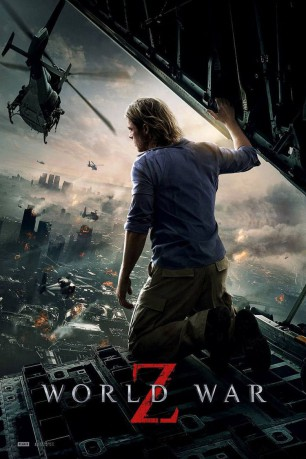

 
 IMDB-Wertung: 7.0 / 10
IMDB-Wertung: 7.0 / 10  Metascore:
Metascore: 
In Philadelphia wird Ex-UNO-Mann Gerry Lane mit seiner Familie Zeuge, wie die Stadt von einer blitzschnell wachsenden Masse Untoter attackiert wird. Im letzten Augenblick gelingt die Flucht auf einen Flugzeugträger vor der Küste Amerikas, wo sich Gerrys schlimmste Befürchtungen bestätigen: Die ganze Welt ist bereits infiziert. Um seiner Familie weiterhin Schutz bieten zu können, lässt Gerry sich zu einem Himmelfahrtskommando überreden und macht sich auf die Suche nach dem Patienten Zero, von dem die Seuche ausging.
Jahr: 2013
Dauer: 116 Minuten
FSK: 16
Land: USA Studio: Paramount PicturesTonspuren: DD5.1 - ,
Untertitel: Deutsch,
Auflösung: 1080p (1920x800) Größe: 6082 MB
Genre: Action, Abenteuer, Horror, Sci-Fi, Thriller
Regisseur:  Marc Forster
Marc Forster
Drehbuch: Matthew Michael Carnahan, Drew Goddard, Damon Lindelof, Matthew Michael Carnahan, J. Michael Straczynski
Soundtrack: Marco Beltrami
Darsteller:
 Brad Pitt als Gerry Lane
Brad Pitt als Gerry Lane James Badge Dale als Captain Speke
James Badge Dale als Captain Speke Matthew Fox als Parajumper
Matthew Fox als Parajumper Fana Mokoena als Thierry Umutoni
Fana Mokoena als Thierry Umutoni David Morse als Ex-CIA Agent
David Morse als Ex-CIA Agent Elyes Gabel als Andrew Fassbach
Elyes Gabel als Andrew Fassbach Peter Capaldi als W.H.O. Doctor
Peter Capaldi als W.H.O. Doctor Pierfrancesco Favino als W.H.O. Doctor
Pierfrancesco Favino als W.H.O. Doctor Ruth Negga als W.H.O. Doctor
Ruth Negga als W.H.O. Doctor Moritz Bleibtreu als W.H.O. Doctor
Moritz Bleibtreu als W.H.O. Doctor David Andrews als Naval Commander
David Andrews als Naval Commander Jane Perry als UN Delegate
Jane Perry als UN Delegate Lucy Russell als UN Delegate
Lucy Russell als UN Delegate Konstantin Khabenskiy als Russian Fighter
Konstantin Khabenskiy als Russian Fighter Michiel Huisman als Ellis
Michiel Huisman als Ellis Lee Nicholas Harris als Camp Humphrey's Soldier
Lee Nicholas Harris als Camp Humphrey's Soldier Jonathan Howard als Camp Humphrey's Soldier
Jonathan Howard als Camp Humphrey's Soldier Mike Noble als Camp Humphrey's Soldier
Mike Noble als Camp Humphrey's Soldier Nick Bartlett als Market Attacker
Nick Bartlett als Market Attacker Josh Wingate als Argus Sergeant
Josh Wingate als Argus Sergeant Michael Jenn als W.H.O. Vault Zombie
Michael Jenn als W.H.O. Vault Zombie Tim Ahern als Opening Scene Co Pilot , uncredited
Tim Ahern als Opening Scene Co Pilot , uncredited Lee Asquith-Coe als U.S Marine Helicopter Soldier , uncredited
Lee Asquith-Coe als U.S Marine Helicopter Soldier , uncredited Féodor Atkine als (uncredited
Féodor Atkine als (uncreditedDatei: X:\2013(N-Z)\World War Z (2013, FSK16, 1920x800) 3D.mkv seit 27.03.2015
Festplatte: HD 2013(I-Z)-2014(A-Z)
 Es gibt insgesamt 133 Filme in der Gruppe '2013(N-Z)'
Es gibt insgesamt 133 Filme in der Gruppe '2013(N-Z)'